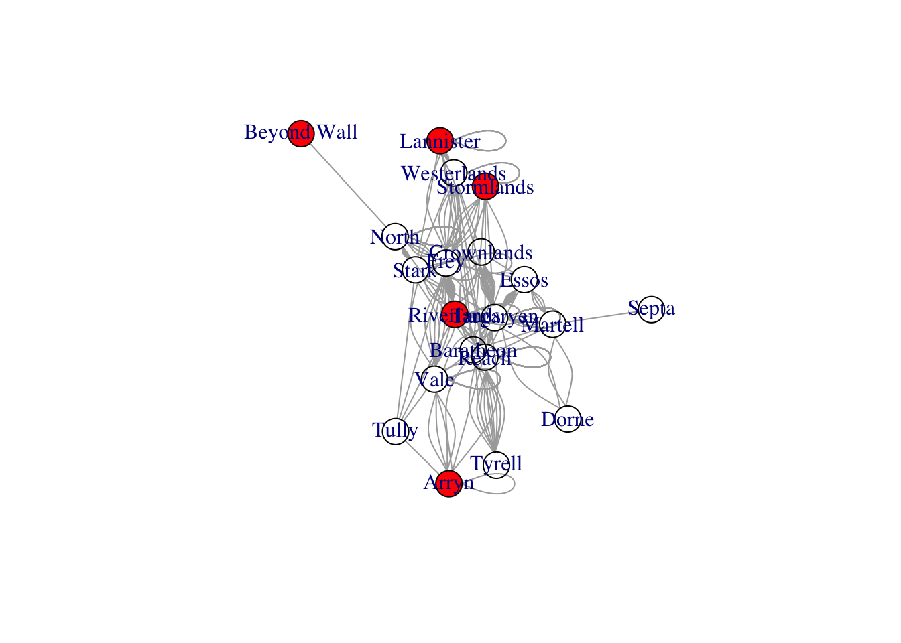

Code
# listing all objects
ls()character(0)Ananya Pujary
February 22, 2023
Describe the basic structure of a network following the steps in tutorial of week 2, this time using a dataset of your choice: for instance, you could use Marriages in Game of Thrones or Like/Dislike from week 1.
Another more complex option is the newly added dataset of the US input-output table of direct requirements by industry, available in the Bureau of Economic Analysis. Input-output tables show the economic transactions between industries of an economy and thus can be understood as a directed adjacency matrix. Data is provided in the form of an XLSX file, so using read_xlsx from package readxl is recommended, including the sheet as an argument (2012 for instance).
Identify and describe content of nodes and links, and identify format of data set (i.e., matrix or edgelist, directed or not, weighted or not), and whether attribute data are present. Be sure to provide information about network size (e.g., information obtained from network description using week 1 network basic tutorial commands.)
I’ll be working with the Game of Thrones like-dislike dataset.
Rows: 255 Columns: 5
── Column specification ────────────────────────────────────────────────────────
Delimiter: ","
chr (5): From, To, Type, Notes, Generation
ℹ Use `spec()` to retrieve the full column specification for this data.
ℹ Specify the column types or set `show_col_types = FALSE` to quiet this message.# A tibble: 255 × 5
From To Type Notes Generation
<chr> <chr> <chr> <chr> <chr>
1 Targaryen Stark Married R+L=J Current
2 Baratheon Martell Engaged died Current
3 Baratheon Stark Engaged broken Current
4 Martell Essos Married <NA> Current
5 Martell Reach Affair <NA> Current
6 Martell Essos Affair <NA> Current
7 Martell Essos Affair <NA> Current
8 Martell Septa Affair <NA> Current
9 Martell Dorne Affair <NA> Current
10 Martell Targaryen Married <NA> Current
# … with 245 more rows[1] 20[1] 255[1] FALSE[1] FALSE[1] FALSEThis network has 20 vertices and 255 edges. It is not directed, not bipartite, and not weighted.
Listing the vertex and edge attributes:
Now, trying a dyad census to figure out the number of dyads that have reciprocal, asymmetric, and absent relationships:
In this network, there are 60 mutual, 0 asymmetric, and 130 absent relationships. This is interesting since it maps marriages connections in the GOT universe, indicating that a lot of characters aren’t married, and there are no asymmetric ties because marriage is a mutual partnership.
Now doing a triad census:
Compute global transitivity using transitivity on igraph or gtrans on statnet and local transitivity of specific nodes of your choice, in addition to the average clustering coefficient. What is the distribution of node degree and how does it compare with the distribution of local transitivity?
[1] 0.4411765[1] 0.5478074+ 1/20 vertex, named, from 7c2b352:
[1] Lannister [1] 0.3636364 0.4181818 0.4000000 0.7000000 1.0000000 0.3636364 0.1666667
[8] 0.5714286 0.6666667 0.4166667 0.4666667 0.6666667 0.5000000 0.2888889
[15] 0.5714286 0.7000000 0.6000000 NaN 1.0000000 NaN[1] 0.3636364 0.4181818 0.7000000The global transitivity is 0.4411765 and the local transitivity is 0.5478074 The local transitivity of “Targaryen” is 0.3636364, 0.4181818 for “Baratheon”, and 0.7000000 for “Lannister”. Thus, Lannister seems to be the family with the most marriages when compared to Targaryen and Baratheon.
Can you compute the average path length and the diameter of the network? Can you find the component structure of the network and identify the cluster membership of each node?
[1] 1.9[1] 4[1] "membership" "csize" "no" [1] 1[1] 20 North
Lannister 2The average path length is 1.9 and the diameter is 4, which indicates that it is a relatively small network. It has one component with 20 nodes, so it is very connected. The distance between North and Lannister is 2, which is around the average path length.
Warning in length(eattrs[[name]]) <- ec: length of NULL cannot be changed
---
title: "Week 2 Challenge"
author: "Ananya Pujary"
description: "Describing the Basic Structure of a Network"
date: "02/22/2023"
format:
html:
toc: true
code-fold: true
code-copy: true
code-tools: true
# editor: visual
categories:
- challenge_2
- Ananya Pujary
# - railroads
# - faostat
# - wildbirds
---
```{r}
#| label: setup
#| include: false
library(igraph)
library(network)
library(readr)
```
## Challenge Overview
Describe the basic structure of a network following the steps in tutorial of week 2, this time using a dataset of your choice: for instance, you could use Marriages in Game of Thrones or Like/Dislike from week 1.
Another more complex option is the newly added dataset of the US input-output table of direct requirements by industry, available in the Bureau of Economic Analysis. Input-output tables show the economic transactions between industries of an economy and thus can be understood as a directed adjacency matrix. Data is provided in the form of an `XLSX` file, so using `read_xlsx` from package `readxl` is recommended, including the `sheet` as an argument (`2012` for instance).
Identify and describe content of nodes and links, and identify format of data set (i.e., matrix or edgelist, directed or not, weighted or not), and whether attribute data are present. Be sure to provide information about network size (e.g., information obtained from network description using week 1 network basic tutorial commands.)
## Describe the Network Data
### Listing objects
```{r}
# listing all objects
ls()
```
I'll be working with the Game of Thrones like-dislike dataset.
```{r}
got_marriages<-read_csv("../posts/_data/got/got_marriages.csv")
got_marriages
got_marriages.ig <-graph_from_data_frame(got_marriages, directed = FALSE)
```
### Network Size and Features
```{r}
# network size
vcount(got_marriages.ig)
ecount(got_marriages.ig)
# network features
is_directed(got_marriages.ig)
is_bipartite(got_marriages.ig)
is_weighted(got_marriages.ig)
```
This network has 20 vertices and 255 edges. It is not directed, not bipartite, and not weighted.
### Network Attributes
Listing the vertex and edge attributes:
```{r}
vertex_attr_names(got_marriages.ig)
edge_attr_names(got_marriages.ig)
```
## Dyad and Triad Census
Now, trying a dyad census to figure out the number of dyads that have reciprocal, asymmetric, and absent relationships:
```{r}
igraph::dyad.census(got_marriages.ig)
```
In this network, there are 60 mutual, 0 asymmetric, and 130 absent relationships. This is interesting since it maps marriages connections in the GOT universe, indicating that a lot of characters aren't married, and there are no asymmetric ties because marriage is a mutual partnership.
Now doing a triad census:
```{r}
triad_census(got_marriages.ig)
```
## Global and Local Transitivity or Clustering
Compute global transitivity using `transitivity` on `igraph` or `gtrans` on `statnet` and local transitivity of specific nodes of your choice, in addition to the average clustering coefficient. What is the distribution of node degree and how does it compare with the distribution of local transitivity?
```{r}
# global clustering
igraph::transitivity(got_marriages.ig, type="global")
# local clustering
transitivity(got_marriages.ig, type="average")
# listing vertices I'm interested in
V(got_marriages.ig)[V(got_marriages.ig)$name == "Lannister"]
# checking ego network transitivity
igraph::transitivity(got_marriages.ig, type="local", vids=V(got_marriages.ig)$name)
igraph::transitivity(got_marriages.ig, type="local", vids=V(got_marriages.ig)[c("Targaryen","Baratheon", "Lannister")])
# trans.vector <- transitivity(like_dislike.ig, type = "local")
# trans.vector[V(like_dislike.ig)$name == "Jon Snow"]
```
The global transitivity is 0.4411765 and the local transitivity is 0.5478074 The local transitivity of "Targaryen" is 0.3636364, 0.4181818 for "Baratheon", and 0.7000000 for "Lannister". Thus, Lannister seems to be the family with the most marriages when compared to Targaryen and Baratheon.
## Path Length and Component Structure
Can you compute the average path length and the _diameter_ of the network? Can you find the component structure of the network and identify the cluster membership of each node?
```{r}
# average path length
average.path.length(got_marriages.ig,directed=F)
# diameter of network
diameter(got_marriages.ig, directed=FALSE)
# looking at the network component structure
names(igraph::components(got_marriages.ig))
## number of components
igraph::components(got_marriages.ig)$no
## size of each component
igraph::components(got_marriages.ig)$csize
# calculate distance using unweighted edges
distances(got_marriages.ig,"Lannister","North", weights=NA)
```
The average path length is 1.9 and the diameter is 4, which indicates that it is a relatively small network. It has one component with 20 nodes, so it is very connected. The distance between North and Lannister is 2, which is around the average path length.
```{r}
# plotting the network
E(got_marriages.ig)$color <- colorRampPalette(c("yellow", "blue"))(11)[E(got_marriages.ig)$weight + 6]
V(got_marriages.ig)$color[grep("Lannister", V(got_marriages.ig)$name)] <- "red"
plot(got_marriages.ig)
```